Introduction
This chapter illustrates how to build Realtek’s SDK under GCC environment. It focuses on both Windows platform and Linux distribution. The build and download procedures are quite similar between Windows and Linux operating systems.
For Windows, Windows 10 64-bit is used as a platform.
For Linux server, Ubuntu 16.04 64-bit is used as a platform.
Preparing GCC Environment
Windows
For Windows, use MSYS2 and MinGW as the GCC environment.
MSYS2 is a collection of tools and libraries providing an easy-to-use environment for building, installing, and running native Windows software.
MinGW is an advancement of the original mingw.org project. It is created to support the GCC compiler on Windows system.
The steps to prepare GCC environment are as follows:
Download MSYS2 from its official website https://www.msys2.org.
Run the installer. MSYS2 requires 64-bit Windows 7 or later.
Enter your desired
Installation Folder(ASCII, no accents, spaces nor symlinks, short path)When done, tick
Run MSYS2 now.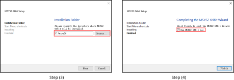
Update the package database and base packages with:
pacman -Syu
When
Proceed with installation? [Y/n]is displayed, typeYand continue until the package installation is done.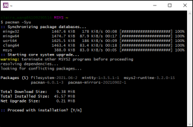
Caution
After installation of MSYS2, there will be four start modes:
MSYS2 MinGW 32-bit
MSYS2 MinGW 64-bit
MSYS2 MinGW UCRT 64-bit
MSYS2 MSYS
Because the toolchain release will base on 64-bit MinGW, choose
MSYS2 MinGW 64-bitwhen starting the MinGW terminal.Run
MSYS2 MinGW 64-bitfromStartmenu. Update the rest of the base packages with:pacman -Syu
When
Proceed with installation? [Y/n]is displayed, typeYand continue until the package installation is done.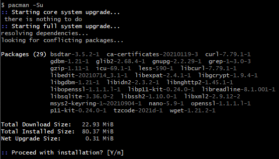
Install the necessary software packages with the commands below in order:
pacman –S make pacman –S unzip pacman –S gcc pacman –S python pacman –S ncurses-devel pacman –S openssl-devel pacman -S mingw-w64-x86_64-gcc-libs
When
Proceed with installation? [Y/n]is displayed, typeYand continue until each software package installation is done.Search the needed packages (used to compile TF-M) in and install them as you need with the commands below.
pacman -S diffutils pacman -S vim pacman -S python-pip pacman -S cmake pip install Jinja2
Remove the file path length limit by editing the registry to allow the file paths longer than 260 characters.
Press
Win+Rkeys to open theRundialog box, then typeregeditand pressEnterto open theRegistry Editor.Navigate to the registry key:
Computer\HKEY_LOCAL_MACHINE\SYSTEM\CurrentControlSet\Control\FileSystem.Search and check if the
LongPathsEnableditem exists. If not, continue to Step d; otherwise, go to Step e.Right-click on an empty space in the right pane, then select :, and name it
LongPathsEnabled.Double-click on
LongPathsEnabledand set its value to 1, then clickOKto save.
{kind=link}
{kind=link}
{kind=link}
Linux
On Linux, 32-bit Linux is not supported because of the toolchain.
The packages listed below should be installed for the GCC environment:
gcc
libncurses5
bash
make
libssl-dev
binutils
python3
Some of the packages above may have been pre-installed in your operating system. You can either use package manager or type the corresponding version command on terminal to check whether these packages have already existed. If not, make them installed.
$ls -l /bin/sh
Starting from Ubuntu 6.10, dash is used by default instead of bash. You can use
$ls -l /bin/shcommand to check whether the system shell is bash or dash.(Optional) If the system shell is dash, use
$sudo dpkg-reconfigure dashcommand to switch from dash to bash.If the system shell is bash, continue to do the subsequent operations.

$make -v

$sudo apt-get install libssl-dev

binutils
Use
ld -vcommand to check if binutils has been installed. If not, the following error may occur.
Troubleshooting
MSYS2 pacman is responsible for managing and installing software, which is similar to apt-get in ubuntu. When
bash:XXX:command not foundappears, you can try instructionpacman -S <package_name>to install.For detailed information of one package, try
pacman -Si <package_name>.If system head files are not found when building tool,
No such file or directoryerror will show up. You can trypacman -Fy <FILE_NAME>to check which package is lost, and install the lost package. If too many packages are lost, look for detailed information about the packages to decide which to install.For multi-version python host, command
update-alternatives --install /usr/bin/python python /usr/bin/python3.x 1can be used to select python of specific version 3.x, where x represents a desired version number.If the error
command 'python' not foundappears during compilation, type commandln -s /usr/bin/python3 /usr/bin/pythonfirst to make sure that python3 is used when running python.
Installing Toolchain
Automatical Installation
By default, the toolchain will be automatically installed in /opt/rtk-toolchain when building the project at the first time.
During the compilation, we will check if the toolchain exists and if the version of the toolchain match the lastest version. Once error occurs, you should fix the error according to the prompts on the screen and try again with
make.
The toolchain will be downloaded from GitHub when building the project at the first time. If the download speed from GitHub is too slow or download failed, execute the command
make toolchain URL=aliyunormake toolchain URL=githubfirst to get the toolchain before building the project. We recommend usemake toolchain URL=aliyunto download the toolchain from aliyun to improve the download speed.
The default installation path of the toolchain is
/opt/rtk-toolchain. If you want to change it, modifyTOOLCHAINDIRdefined inMakefile.include.genwhich is located both inproject_km0andproject_km4.
Note
If an error
Create Toolchain Dir Failed. May Not Have Permissionappears, please create the installation directory by manual. If still fails, refer to 3 above to change the installtion path.If an error
Download Failedappears, please check if the network connection is accessible first. If still fails, refer to 2 above to intall the toolchain again.If an error
Current Toolchain Version Mismatchedappears, please delete the current toochain and retry withmake, and the latest toolchain will be installed automatically during building the project.
If the installation still fails, try with the manual installation steps below.
Manual Installation
Windows
This section introduces the steps to prepare the toolchain environment manually.
Acquire the zip files of the toolchain from Realtek.
Create a new directory
rtk-toolchainunder the path{MSYS2_path}\opt.For example, if your MSYS2 installation path is as set in Section Windows Step 3, the
rtk-toolchainshould be inC:\msys64\opt.
Unzip
asdk-10.3.x-mingw32-newlib-build-xxxx.zipand place the toolchain folderasdk-10.3.xto the folderrtk-toolchaincreated in Step 2.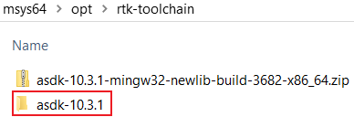
{kind=link}
Note
The unzip folders should stay the same with the figure above and do NOT change them, otherwise you need to modify the toolchain directory in makefile to customize the path.
Linux
This section introduces the steps to prepare the toolchain environment manually.
Acquire the zip files of the toolchain from Realtek.
Create a new directory
rtk-toolchainunder the path/opt.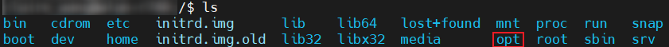
Unzip
asdk-10.3.x-linux-newlib-build-xxxx.tar.bz2to/opt/rtk-toolchain, then you can get the directory below:
{kind=link}
Note
The unzip folders should stay the same with the figure above and do NOT change them, otherwise you need to modify the toolchain directory in makefile to customize the path.
Configuring SDK
This section illustrates how to change SDK configurations.
User can configure SDK options for KM0 and KM4 at the same time through $make menuconfig command.
Switch to the directory
{SDK}\amebadplus_gcc_projectRun
$make menuconfigcommand on MSYS2 MinGW 64-bit (Windows) or terminal (Linux)
Note
The command $make menuconfig is only supported under {SDK}\amebadplus_gcc_project, but not supported under other paths.
The main configurable options are divided into four parts:
General Config: the shared kernel configurations for KM4 and KM0. The configurations will take effect in both KM4 and KM0.Network Config: the shared kernel configurations for KM4 and KM0. The configurations will take effect in both KM4 and KM0.KM4 Config: the exclusive kernel configurations for KM4. The configurations will take effect only in KM4 but not in KM0.KM0 Config: the exclusive kernel configurations for KM0. The configurations will take effect only in KM0 but not in KM4.
The following figure is the menuconfig UI, and the options in red may be used frequently.
{kind=link}
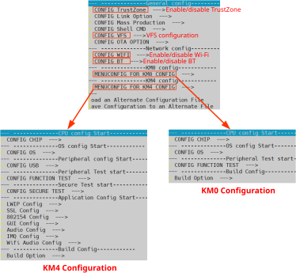
menuconfig UI
User can configure SDK options for KR4 and KM4 at the same time by $make menuconfig command.
Switch to the directory
{SDK}\amebalite_gcc_project.Run
$make menuconfigcommand on MSYS2 MinGW 64-bit (Windows) or terminal (Linux).
Note
$make menuconfig command is only supported under {SDK}\amebalite_gcc_project, but not supported under other paths.
The main configurable options are divided into four parts:
General Config: the shared kernel configurations for KM4 and KR4. The configurations will take effect in both KM4 and KR4.Network Config: the incompatible kernel configurations for KM4 and KR4. Take Wi-Fi processor role as an example, KR4 is AP when KM4 is NP, while KM4 is AP when KR4 is NP. The configurations will take effect in both KM4 and KR4.KM4 Config: the exclusive kernel configurations for KM4. The configurations will take effect only in KM4 but not in KR4.KR4 Config: the exclusive kernel configurations for KR4. The configurations will take effect only in KR4 but not in KM4.
The following figure is the menuconfig UI, and the options in red may be used frequently.

menuconfig UI
Users can configure SDK options for KM0/KM4/CA32 at the same time through $make menuconfig command.
Switch to the directory
{SDK}\amebasmart_gcc_project.Run
$make menuconfigcommand on MSYS2 MinGW 64-bit (Windows) or terminal (Linux)
Note
$make menuconfig command is only supported under {SDK}\amebasmart_gcc_project, but not supported under other paths.
The main configurable options are divided into five parts:
General Config: the shared kernel configurations for KM0/KM4/CA32. The configurations will take effect in all CPUs.Network Config: the incompatible kernel configurations for KM4 and CA32. Take Wi-Fi as an example, it can be set to INIC mode (KM4 is NP and CA32 is AP) and single core mode (KM4 is both NP and AP). The configurations will take effect in KM4 and CA32.KM0 Config: the configurations will take effect only in KM0.KM4 Config: the configurations will take effect only in KM4.CA32 Config: the configurations will take effect only in CA32.
The following figure is the menuconfig UI, and the options in red may be used frequently.

menuconfig UI
Building Code
This section illustrates how to build SDK for both Windows and Linux. The following table lists all the GCC project directories of SDK.
GCC project |
Directory |
|---|---|
KM4 |
{SDK}\amebadplus_gcc_project\project_km4 |
KM0 |
{SDK}\amebadplus_gcc_project\project_km0 |
GCC project |
Directory |
|---|---|
KM4 |
{SDK}\amebalite_gcc_project\project_km4 |
KR4 |
{SDK}\amebalite_gcc_project\project_kr4 |
GCC project |
Directory |
|---|---|
CA32 |
{SDK}\amebasmart_gcc_project\project_ap |
KM4 |
{SDK}\amebasmart_gcc_project\project_hp |
KM0 |
{SDK}\amebasmart_gcc_project\project_lp |
Note
Replace the {SDK} with your own SDK directory.
There are two ways to build the SDK, you can choose either of them.
Build One by One
Follow these steps to build the SDK of KM4 and KM0 projects one by one:
Use
$cdcommand to switch to the project directories of SDK on Windows or Linux.For example, you can type
$cd {SDK}\amebadplus_gcc_project\project_km4to switch to the KM4 project, the same operation for the KM0 project.Build SDK under the KM0 or KM4 project directory on Windows or Linux.
For normal image, simply use
$make allcommand to build SDK.For MP image, refer to Section How to Build MP Image to build SDK.
Check the command execution results. If somehow failed, type
$make cleanto clean and then redo the make procedure.For KM4 project, if the terminal contains
target_img2.axfandImage manipulating endmessage (see KM4 project make all), it means that KM4 images have been built successfully. You can find them under\amebadplus_gcc_project\project_km4\asdk\image(see KM4 image generation).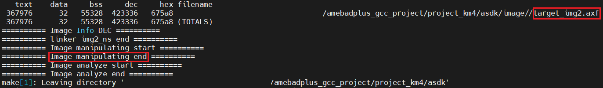
KM4 project make all
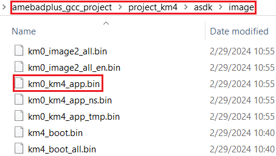
KM4 image generation
For KM0 project, if the terminal contains
target_img2.axfandImage manipulating endmessage (see KM0 project make all), it means that KM0 image has been built successfully. You can find it under\amebadplus_gcc_project\project_km0\asdk\image(see KM0 image generation).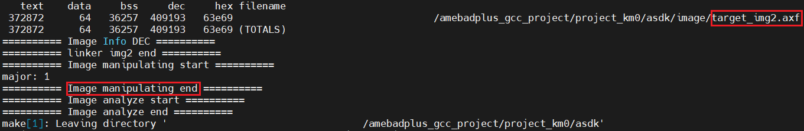
KM0 project make all

KM0 image generation
{kind=link}
{kind=link}
{kind=link}
Follow these steps to build the SDK of KM4 and KR4 projects one by one:
Use
$cdcommand to switch to the project directories of SDK.On Windows, open MSYS2 MinGW 64-bit terminal and use
$cdcommand.On Linux, open its own terminal and use
$cdcommand.
For example, you can type
$cd {SDK}\amebalite_gcc_project\project_km4to switch to the KM4 project, the same operation for KR4 project.Build SDK under the KM4 or KR4 project directory on Windows or Linux.
For normal image, simply use
$make allcommand to build SDK.For MP image, refer to Section How to Build MP Image to build SDK.
Check the command execution results. If somehow failed, type
$make cleanto clean and then redo the make procedure.For KM4 project, if the terminal contains
target_img2.axfandImage manipulating endmessages (see KM4 project make all), it means that KM4 images have been built successfully. You can find them underamebalite_gcc_project\project_km4\asdk\image, as shown in KM4 image generation.
KM4 project make all

KM4 image generation
For KR4 project, if the terminal contains
kr4_image2_all.binandImage manipulating endmessages (see KR4 project make all), it means that KR4 images have been built successfully. You can find them underamebalite_gcc_project\project_kr4\vsdk\image, as shown in KR4 image generation.
KR4 project make all

KR4 image generation
Follow the steps below to build the SDK of all the projects one by one:
Use
$cdcommand to switch to the project directories of SDK.On Windows, open MSYS2 MinGW 64-bit terminal and use
$cdcommand.On Linux, open its own terminal and use
$cdcommand.
For example, you can type
$cd {SDK}\amebasmart_gcc_project\project_hpto switch to the KM4 project directory, the same operation for other projects.Build SDK under the project directory on Windows or Linux.
For normal image, simply use
$make allcommand to build SDK.For MP image, refer to Section How to Build MP Image to build SDK.
Check the command execution results. If somehow failed, type
$make cleanto clean and then redo the make procedure.For KM4 project, if the terminal contains
target_img2.axfandImage manipulating endmessages, it means that the images have been built successfully. You can find them under{SDK}\amebasmart_gcc_project\project_hp\asdk\image, as shown in KM4 project make all and KM4 image generation.
KM4 project make all

KM4 image generation
For KM0 project, if the terminal contains
target_img2.axfandImage manipulating endmessages, it means that the images have been built successfully. You can find them under{SDK}\amebasmart_gcc_project\project_lp\asdk\image, as shown in KM0 project make all and KM0 image generation.
KM0 project make all

KM0 image generation
For CA32 project, if the terminal contains
fip.binandImage manipulating endmessages, it means that the images have been built successfully. You can find them under{SDK}\amebasmart_gcc_project\project_ap\asdk\image, as shown in CA32 project make all and CA32 image generation.
CA32 project make all

CA32 image generation
Build Together
In order to improve the efficiency of building SDK, you can also execute $make all command once under \amebadplus_gcc_project, instead of executing $make all command separately under the KM0 project and KM4 project.
If the terminal contains
target_img2.axfandImage manipulating endmessage (see KM4 & KM0 projects make all), it means that all the images have been built successfully. The image files are generated under\amebadplus_gcc_project(see KM4 & KM0 image generation). You can also find them under\amebadplus_gcc_project\project_km0\asdk\imageand\amebadplus_gcc_project\project_km4\asdk\image.If somehow failed, type
$make cleanto clean and then redo the make procedure.
{kind=link}
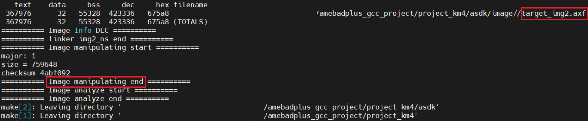
KM4 & KM0 projects make all
{kind=link}
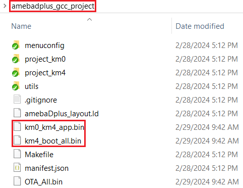
KM4 & KM0 image generation
Note
If you want to search some .map files for debugging, get them under the directory \amebadplus_gcc_project\project_km0\asdk\image or \amebadplus_gcc_project\project_km4\asdk\image, but not \amebadplus_gcc_project.
In order to improve the efficiency of building SDK, you can also execute $make all command once under {SDK}\amebalite_gcc_project, instead of executing $make all command separately under the KR4 project and KM4 project.
If the terminal contains
target_img2.axfandImage manipulating endmessage (see KM4 & KR4 projects make all), it means that all the images have been built successfully. The images are generated underamebalite_gcc_project, as shown in KM4 & KR4 image generation. You can also find them underamebalite_gcc_project\project_kr4\vsdk\imageandamebalite_gcc_project\project_km4\asdk\image.If somehow failed, type
$make cleanto clean and then redo the make procedure.

KM4 & KR4 projects make all

KM4 & KR4 image generation
Note
If you want to search some .map files for debugging, get them under the directory amebalite_gcc_project\project_kr4\vsdk\image or amebalite_gcc_project\project_km4\asdk\image, but not amebalite_gcc_project.
In order to improve the efficiency of building SDK, you can also execute $make all command once under {SDK}\amebasmart_gcc_project, instead of executing $make all command separately under each project.
If the terminal contains
target_img2.axfandImage manipulating endmessages (see All projects make all), it means that the images have been built successfully. The images are generated in{SDK}\amebasmart_gcc_project, as shown in KM4 & KM0 & CA32 image generation. You can also find other generated images under\project_hp\asdk\image,\project_lp\asdk\image, and\project_ap\asdk\image.If somehow failed, type
$make cleanto clean and then redo the make procedure.

All projects make all

KM4 & KM0 & CA32 image generation
Note
If you want to search some .map files for debug, get them under \project_hp\asdk\image, \project_lp\asdk\image, or \project_ap\asdk\image.
Setting Debugger
Probe
RLX Probe debugger (Probe) is an in-house ICE solution to debug CPU. The RTL8721Dx device board supports Probe. We can use Probe to download the software and enter GBD debugger mode under GCC environment. For Windows and Linux server, the operations are the same.
Install Probe driver
Before using the Probe, install its driver correctly.
Location:
{SDK}\tools\probeDriver:
RLX_Probe_Driver_2.3.xxx_Setup.exe
Refer to the following table to connect Probe debugger to the SWD of RTL8721Dx, that is, connect TCK pin of Probe to SWD CLK pin of RTL8721Dx, and TMS pin of Probe to SWD DATA pin of RTL8721Dx. What’s more, a common ground is needed between Probe Board and Device Board.
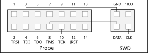
Wiring diagram of connecting Probe to SWD
{kind=link}
KM4 Setup
Execute the
cm4_RTL_Probe.batExecute the
cm4 _RTL_Probe.batunder\amebadplus_gcc_project\utils\jlink_script. The started Probe server looks like the following figure. This window should NOT be closed if you want to enter debug mode.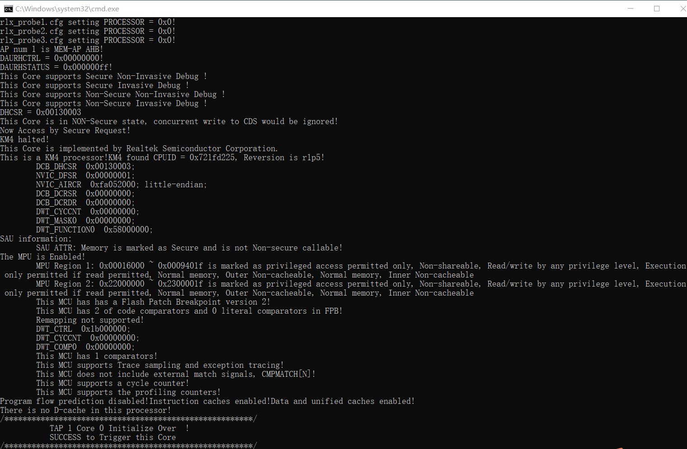
KM4 Probe server connection under Windows
Note
The default path of Probe driver in RTL_Probe_cm4.bat file is
C:\RLX\PROBE\rlx_probe_driver.exe, you may have to change the path according to your own settings.Setup Probe for KM4
Change directory to project_hp.
On the MSYS2 terminal, type
$ make setup GDB_SERVER=probecommand to select Probe debugger, as Figure 1-10 shows.
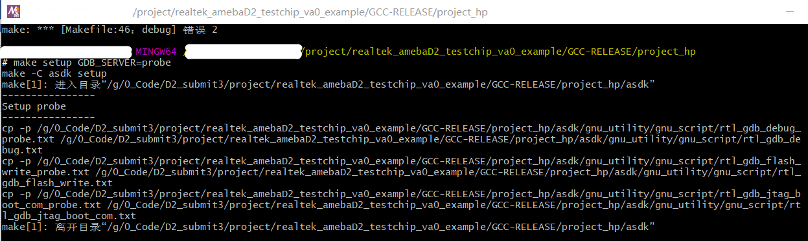
KM4 Probe setup under Windows
{kind=link}
{kind=link}
KM0 Setup
Execute the
RTL_Probe_cm0.batExecute the
RTL_Probe_cm0.batunder\amebadplus_gcc_project\utils\jlink_script. This operation will connect the Probe to both KM0 and KM4.Note
Connect to target KM0 with port
2331, and KM4 with port2335.The started Probe server looks like the following figure. This window should NOT be closed if you want to download the image or enter debug mode.

KM0 Probe server connection under Windows
Setup Probe for KM0
On the MSYS2 terminal, type
$make setup GDB_SERVER=probecommand to select Probe debugger.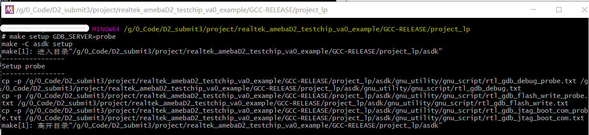
KM0 Probe setup under Windows
{kind=link}
J-Link
The RTL8721Dx supports J-Link debugger. Before setting J-Link debugger, you need to do some hardware configuration and download images to the RTL8721Dx device first.
Connect J-Link to the SWD of RTL8721Dx.
Refer to the following figure to connect SWCLK pin of J-Link to SWD CLK pin of RTL8721Dx, and SWDIO pin of J-Link to SWD DATA pin of RTL8721Dx.
Connect the RTL8721Dx device to PC after finishing these configurations.
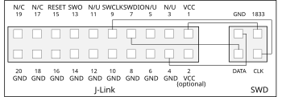
Wiring diagram of connecting J-Link to SWD
Note
For RTL8721Dx, the J-Link version must be v9 or higher. If Virtual Machine (VM) is used as your platform, make sure that the USB connection setting between VM host and client is correct, so that the VM host can detect the device.
Download images to the RTL8721Dx device via ImageTool.
ImageTool is a software tool provided by Realtek. For more information, refer to Image Tool.
{kind=link}
Windows
Besides the hardware configuration, J-Link GDB server is also required to install.
For Windows, click and download the software in J-Link Software and Documentation Pack, then install it correctly.
Note
The version of J-Link GDB server below is just an example, you can select the latest version to download.
Execute the
cm4_jlink.batDouble-click the
cm4_jlink.batunder{SDK}\amebadplus_gcc_project\utils\jlink_script. You may have to change the path of JLinkGDBServer.exe and JLink.exe in thecm4_jlink.batscript according to your own settings.The started J-Link GDB server looks like below. This window should NOT be closed if you want to download the image or enter debug mode.
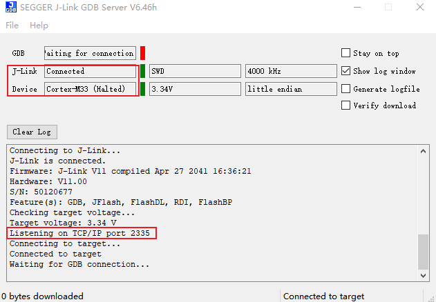
KM4 J-Link GDB server connection under Windows
Note
Keep this window active to download the images to target.
Setup J-Link for KM4
Change the working directory to project_km4.
On the MSYS2 terminal, type
$make setup GDB_SERVER=jlinkcommand before selecting J-Link debugger.
KM4 J-Link setup under Windows
{kind=link}
Execute the
cm0_jlink.batDouble-click the
cm0_jlink.batunder{SDK}\amebadplus_gcc_project\utils\jlink_script, the same as executing thecm4_jlink.bat.The started J-Link GDB server looks like below. This window should NOT be closed if you want to download the image or enter debug mode. Because KM4 will download all the images, you don’t need to connect J-Link to KM0 when downloading images. J-Link can connect to KM0 when debugging.

KM0 J-Link GDB server connection under Windows
Setup J-Link for KM0
Change working directory to project_km0.
On the Cygwin terminal, type
$make setup GDB_SERVER=jlinkcommand to select J-Link debugger.

KM0 J-Link setup under Windows
Execute the
km4_jlink_combination.batDouble-click the
km4_jlink_combination.batunder{SDK}\amebalite_gcc_project\utils\jlink_script. You may have to change the path ofJLinkGDBServer.exeandJLink.exein thekm4_jlink_combination.batscript according to your own settings.The started J-Link GDB server looks like below. This window should NOT be closed if you want to download the image or enter debug mode.

KM4 J-Link GDB server connection under Windows
Caution
Keep this window active to download the images to target.
Setup J-Link for KM4
Change the working directory to project_km4.
On the MSYS2 terminal, type
$make setup GDB_SERVER=jlinkcommand before selecting J-Link debugger.
KM4 J-Link setup under Windows
Execute the
kr4_jlink_combination.batDouble-click the
kr4_jlink_combination.batunder{SDK}\amebalite_gcc_project\utils\jlink_script, the same as executing thekm4_jlink_combination.bat.The started J-Link GDB server looks like below. This window should NOT be closed if you want to download the image or enter debug mode. Because KM4 will download all the images, you don’t need to connect J-Link to KR4 when downloading images. J-Link can connect to KR4 when debugging.

KR4 J-Link GDB server connection under Windows
Setup J-Link for KR4
Change working directory to project_kr4.
On the Cygwin terminal, type
$make setup GDB_SERVER=jlinkcommand to select J-Link debugger.

KR4 J-Link setup under Windows
Execute the
cm4_jlink.batDouble-click the
cm4_jlink.batunder{SDK}\amebasmart_gcc_project\utils\jlink_script. You may have to change the path ofJLinkGDBServer.exein thecm4_jlink.batscript according to your own settings.The started J-Link GDB server looks like below. This window should NOT be closed if you want to download the image or enter debug mode.

KM4 J-Link GDB server connection under Windows
Caution
Keep this window active to download the images to target.
Switch directory to project_hp for KM4
Use
$cdcommand to change the directory to project_hp, then you can input commands in section command_lists or gdb_command_lists.
Execute the
cm0_jlink.batDouble-click the
cm0_jlink.batunder{SDK}\amebasmart_gcc_project\utils\jlink_script, the same as executing thecm4_jlink.bat.The started J-Link GDB server looks like below. This window should NOT be closed if you want to download the image or enter debug mode. Because KM4 will download all the images, you don’t need to connect J-Link to KM0 when downloading images. J-Link can connect to KM0 when debugging.

KM0 J-Link GDB server connection under Windows
Switch directory to project_lp for KM0
Use
$cdcommand to change the directory to project_lp, then you can input command in section command_lists or gdb_command_lists.
The CA32 has two cores named core0 and core1, which can be debugged separately. By default, ca32_jlink_core0.bat is for core0 and ca32_jlink_core1.bat is for core1.
Double-click the
ca32_jlink_core0.batunder{SDK}\amebasmart_gcc_project\utils\jlink_script.The started J-Link GDB server looks like below. CA32 core0 listens on port 2337 by default. This GDB Server window should NOT be closed if you want to enter debug mode.

CA32 core0 J-Link GDB server connection under Windows
Double click the
ca32_jlink_core1.batunder{SDK}\amebasmart_gcc_project\utils\jlink_script.The started J-Link GDB server looks like below. CA32 core1 listens on port 2339 by default.

CA32 core1 J-Link GDB server connection under Windows
Caution
When opening core1 GDB server, core0 and core1 will halt and can’t run together. Open this window only when you want to debug two cores together, and you know what you are doing.
To debug core0 and core1 separately, make sure that function
EnabelCrossTrigger()is commented out as below.
void InitTarget(void) {
Report("******************************************************");
Report("J-Link script: AmebaSmart (Cortex-A32 CPU0) J-Link script");
Report("******************************************************");
…
//EnabelCrossTrigger(); // comment out if needed
}
Linux
For J-Link GDB server, click and download the software in J-Link Software and Documentation Pack. It is suggested to use Debian package manager to install the Debian version.
Open a new terminal and type the following command to install GDB server. After the installation of the software pack, there is a tool named “JLinkGDBServer” under the J-Link directory. Take Ubuntu 18.04 as an example, the JLinkGDBServer can be found at /opt/SEGGER/JLink.
$dpkg –i jlink_6.0.7_x86_64.deb
Note
The version of J-Link GDB server below is just an example, you can select the latest version to download.
Connect to KM4
Open a new terminal under directory
/amebadplus_gcc_project/utils/jlink_script, and type$/opt/SEGGER/JLink/JLinkGDBServer -select USB-device Cortex-M33 -if SWD -scriptfileAP2_KM4.JLinkScript port 2335.
KM4 J-Link GDB server connection setting under Linux
If the connection is successful, the log is shown as below. This terminal should NOT be closed if you want to download software or enter GDB debugger mode.

KM4 J-Link GDB server connection success under Linux
Setup J-Link for KM4
Open a new terminal under project_km4 folder, and type
$make setup GDB_SERVER=jlinkcommand before using J-Link to download software or enter GDB debugger.
KM4 J-Link terminal setup under Linux
Connect to KM0
Open a new terminal under directory
/amebadplus_gcc_project/utils/jlink_script, and type$/opt/SEGGER/JLink/JLinkGDBServer -select USB -device Cortex-M23 -if SWD -scriptfile AP1_KM0.JLinkScript port 2331.
KM0 J-Link GDB server connection setting under Linux
If the connection is successful, the log is shown below.
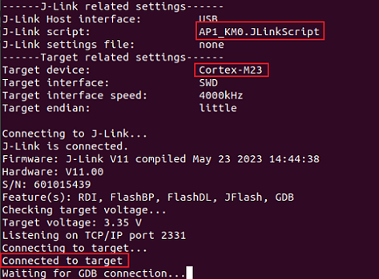
KM0 J-Link GDB server connection success under Linux
Setup J-Link for KM0
Open a new terminal under project_km0, and type
$make setup GDB_SERVER=jlinkcommand before using J-Link to download software or enter GDB debugger.
KM0 J-Link terminal setup under Linux
{kind=link}
Connect to KM4
Open a new terminal under
amebalite_gcc_project/utils/jlink_script, and type$/opt/SEGGER/JLink/JLinkGDBServer -select USB-device Cortex-M33 -if SWD -scriptfile AP0_KM4.JLinkScript port 2335.
KM4 J-Link GDB server connection setting under Linux
If the connection is successful, the log is shown as below. This terminal should NOT be closed if you want to download software or enter GDB debugger mode.

KM4 J-Link GDB server connection success under Linux
Setup J-Link for KM4
Open a new terminal under project_km4 folder, and type
$make setup GDB_SERVER=jlinkcommand before using J-Link to download software or enter GDB debugger.
KM4 J-Link terminal setup under Linux
Connect to KM4
Before connecting to KR4, open a new terminal under
amebalite_gcc_project/utils/jlink_script, and type$/opt/SEGGER/JLink/ JLinkExe -device Cortex-M33 -if swd -autoconnect 1 -speed 1000 -JLinkScriptFile KM4_SEL.JLinkScriptto connect to KM4 by J-Link at first.
KM4 J-Link connection setting under Linux
If the connection is successful, the log is shown as below.

KM4 J-Link connection success under Linux
Connect to KR4
After KM4 is connected by J-Link successfully, open a new terminal under the same working directory and type
$/opt/SEGGER/JLink/JLinkGDBServer -select USB-device RV32 -if cjtag -port 2331to connect to KR4.
KR4 J-Link GDB server connection setting under Linux
If the connection is successful, the log is shown as below. This terminal should NOT be closed if you want to download software or enter GDB debugger mode. And it is OK to close the J-Link window of KM4.

KR4 J-Link GDB server connection success under Linux
Setup J-Link for KR4
Open a new terminal under project_kr4, and type
$make setup GDB_SERVER=jlinkcommand before using J-Link to download software or enter GDB debugger.
KR4 J-Link terminal setup under Linux
Open a new terminal under
{SDK}/amebasmart_gcc_project/utils/jlink_script.Type
$/opt/SEGGER/JLink/JLinkGDBServer -device cortex-m33 -if SWD -scriptfile AP1_KM4.JLinkScript -port 2335. This terminal should NOT be closed if you want to download software or enter GDB debugger mode.
If the connection is successful, the log is shown as below.

KM4 J-Link GDB server connection success
Open a new terminal under
{SDK}/amebasmart_gcc_project/utils/jlink_script.Type
$/opt/SEGGER/JLink/JLinkGDBServer -device cortex-m23 -if SWD -scriptfile AP0_KM0.JLinkScript -port 2331. This terminal should NOT be closed if you want to download software or enter GDB debugger mode.
If the connection is successful, the log is shown as below.

KM0 J-Link GDB server connection success
For CA32 core0:
Open a new terminal under
{SDK}/amebasmart_gcc_project/utils/jlink_script.Type
$/opt/SEGGER/JLink/JLinkGDBServer -device cortex-a32 -if SWD -scriptfile AP3_CA32_Core0.JLinkScript -port 2337. This terminal should NOT be closed if you want to download software or enter GDB debugger mode.
If the connection is successful, the log is shown as below.

CA32 core0 J-Link GDB server connection
For CA32 core1:
Open a new terminal under
{SDK}/amebasmart_gcc_project/utils/jlink_script.Type
$/opt/SEGGER/JLink/JLinkGDBServer -device cortex-a32 -if SWD -scriptfile AP3_CA32_Core1.JLinkScript -port 2339. This terminal should NOT be closed if you want to download software or enter GDB debugger mode.
If the connection is successful, the log is shown as below.

CA32 core1 J-Link GDB server connection under Linux
Downloading Image to Flash
There are two ways to download image to Flash:
Image Tool, a software provided by Realtek (recommended). For more information, refer to Image Tool for more information.
GDB Server, mainly used for GDB debug user case.
This section illustrates the second method to download images to Flash.
To download software into Device Board, make sure the steps mentioned in Section Building Code are done, and then type $make flash command on MSYS2 (Windows) or terminal (Linux).
This command downloads the software into Flash and it will take several seconds to finish, as shown below.

Downloading Image to Flash

Download codes success log
Images are downloaded only under KM4. To check whether the image is downloaded correctly into memory, you can select verify download before downloading images, and during image download process, verified OK log will be shown.

Verify download
After download is successful, press the Reset button and you will see that the device boots with the new image.
Note
Only executing command under KM4 project is needed, because KM4 will download all the images.
Entering Debug Mode
GDB Server
To enter GDB debugger mode, follow the steps below:
Make sure that the steps mentioned in Sections Configuring SDK to Setting Debugger are finished, then reset the device.
Change the directory to target project, and type
$make debugon MSYS2 (Windows) or terminal (Linux).
J-Link
Steps
Press Win+R on your keyboard, or find and click Run on the Start menu.
Type
cmdin the Run window and click OK to open the Command Prompt terminal in a new window.Copy the J-Link script command below for the specific target:
For KM4:
"{Jlink_path}\JLink.exe" -device Cortex-M33 -if SWD -speed 4000 -autoconnect 1
For KM0:
"{Jlink_path}\JLink.exe" -device Cortex-M23 -if SWD -speed 4000 -autoconnect 1
Note
{Jlink_path} is the path your Segger J-Link installed, default is C:\Program Files (x86)\SEGGER\JLink.
For KM4:
"{Jlink_path}\JLink.exe" -device Cortex-M33 -if SWD -speed 4000 -autoconnect 1
For KR4:
First:
"{Jlink_path}\JLink.exe" -device Cortex-M33 -if SWD -speed 4000 -autoconnect 1 -JLinkScriptFile {script_path}\KM4_SEL.JLinkScript
Then:
"{Jlink_path}\JLink.exe" -device RV32 -if cjtag -speed 4000 -JTAGConf -1,-1 -autoconnect 1
From KR4 to KM4:
First:
"{Jlink_path}\JLink.exe" -device RV32 -if cjtag -speed 4000 -JTAGConf -1,-1 -JLinkScriptFile {script_path}\KR4_DMI.JLinkScript
Then:
"{Jlink_path}\JLink.exe" -device Cortex-M33 -if SWD -speed 4000 -autoconnect 1
Note
The J-Link connection command path mentioned above are:
{Jlink_path}: the path your Segger J-Link installed, default is
C:\Program Files (x86)\SEGGER\JLink.{script_path}:
{SDK}\amebalite_gcc_project\utils\jlink_script
For KM4:
"{Jlink_path}\JLink.exe" -device Cortex-M33 -if SWD -speed 4000 -autoconnect 1 -JLinkScriptFile {script_path}\AP1_KM4.JLinkScript
For KM0:
"{Jlink_path}\JLink.exe" -device Cortex-M23 -if SWD -speed 4000 -autoconnect 1 -JLinkScriptFile {script_path}\AP0_KM0.JLinkScript
For CA32 core0:
"{Jlink_path}\JLink.exe" -device Cortex-A32 -if SWD -speed 4000 -autoconnect 1 -JLinkScriptFile {script_path}\AP3_CA32_Core0.JLinkScript
For CA32 core1:
"{Jlink_path}\JLink.exe" -device Cortex-A32 -if SWD -speed 4000 -autoconnect 1 -JLinkScriptFile {script_path}\AP3_CA32_Core1.JlinkScript
Note
The J-Link connection command path mentioned above are:
{Jlink_path}: the path your Segger J-Link installed, default is
C:\Program Files (x86)\SEGGER\JLink.{script_path}:
{SDK}\amebasmart_gcc_project\utils\jlink_script.
Commands
The following commands are often used when the program is stuck. All commands are accepted case insensitive.
Command (long) |
Command (short) |
Syntax |
Description |
|---|---|---|---|
Halt |
H |
Halt CPU |
|
Go |
G |
Start CPU if halted |
|
Mem |
Mem <Addr> <NumBytes> |
Read memory and show corresponding ASCII values |
|
SaveBin |
SaveBin <FileName> <Addr> <NumBytes> |
Save target memory range into binary file |
|
Exit |
Close J-Link connection and quit |
For more information, you can visit https://wiki.segger.com/J-Link_Commander.
Note
You can type
HandGseveral times and record the PC, then look for the PC in which function in asm file. This function might be where you get stuck.You can also use
memto dump some address aftersp, from these addresses you can find the function call stack.
Command Lists
The commands mentioned above are listed in the following table.
Usage |
Command |
Description |
|---|---|---|
all |
|
Compile the project to generate ram_all.bin |
setup |
|
Select GDB_SERVER |
flash |
|
Download ram_all.bin to Flash |
clean |
|
Remove compile file (xx.bin, xx.o, …) |
debug |
|
Enter debug mode |
GDB Debugger Basic Usage
GDB, the GNU project debugger, allows you to examine the program while it executes, and it helps catch bugs. Section Entering Debug Mode has described how to enter GDB debugger mode, and this section illustrates some basic usage of GDB commands.
For more information on GDB debugger, click https://www.gnu.org/software/gdb/. The following table describes commonly used instructions and their functions, and specific usage can be found in GDB User Manual of website https://www.sourceware.org/gdb/documentation/.
Usage |
Command |
Description |
|---|---|---|
Breakpoint |
$break |
Breakpoints are set with the break command (abbreviated b). The usage can be found at Setting Breakpoints section. |
Watchpoint |
$watch |
You can use a watchpoint to stop execution whenever the value of an expression changes. The related commands include watch, rwatch, and awatch. The usage of these commands can be found at Setting Watchpoints section. Note Keep the range of watchpoints less than 20 bytes. |
Print breakpoints & watchpoints |
$info |
To print a table of all breakpoints, watchpoints set and not deleted, use the info command. You can simply type info to know its usage. |
Delete breakpoints |
$delete |
To eliminate the breakpoints, use the delete command (abbreviated d). The usage can be found at Deleting Breakpoints section. |
Continue |
$continue |
To resume program execution, use the continue command (abbreviated c). The usage can be found at Continue and Stepping section. |
Step |
$step |
To step into a function call, use the step command (abbreviated s). It will continue running your program until the control reaches a different source line. The usage can be found at Continue and Stepping section. |
Next |
$next |
To step through the program, use the next command (abbreviated n). The execution will stop when the control reaches a different line of code at the original stack level. The usage can be found at Continue and Stepping section. |
Quit |
$quit |
To exit GDB debugger, use the quit command (abbreviated q), or type an end-of-file character (usually Ctrl-d). The usage can be found at Quitting GDB section. |
Backtrace |
$backtrace |
A backtrace is a summary of how your program got where it is. You can use backtrace command (abbreviated bt) to print a backtrace of the entire stack. The usage can be found at Backtraces section. |
Print source lines |
$list |
To print lines from a source file, use the list command (abbreviated l). The usage can be found at Printing Source Lines section. |
Examine data |
To examine data in your program, you can use print command (abbreviated p). It evaluates and prints the value of an expression. The usage can be found at Examining Data section. |